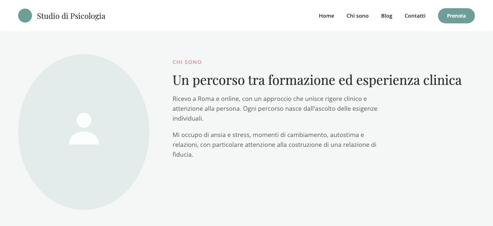
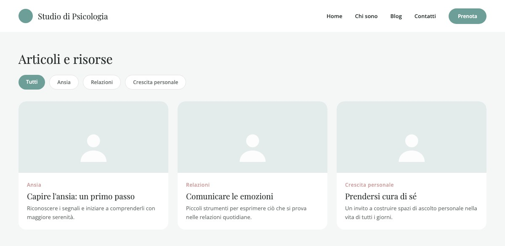
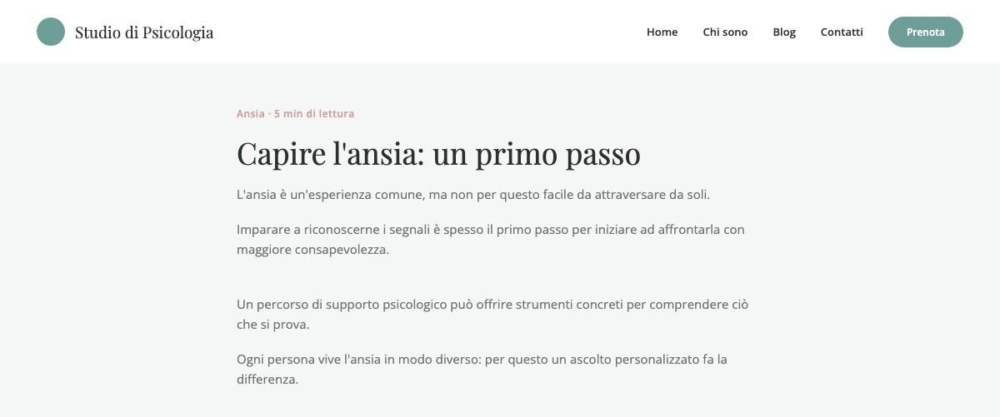

A Website and Blog for a Psychologist
Turning listening and trust into a digital experience.

In short
A clinical psychologist entrusted me with the entire project: from brand identity to launching the site, through to an editorial system that lets her manage new content independently. The goal was to build a professional presence able to communicate expertise without creating distance, and to guide people toward first contact clearly, without pressure.
The challenge
A website dedicated to mental health must hold authority and warmth together. The content needs to help people with different needs recognize themselves, understand the professional's approach, and find a simple way to get in touch, without turning the services into a commercial catalogue.
My contribution
I handled needs analysis and strategic direction, logo and visual identity, tone of voice, content adaptation, information architecture, desktop and mobile UX/UI, WordPress development, accessibility, SEO, privacy and maintenance. I also set up the blog, designed the article template, and created tutorials for independent publishing.
Key decisions
Keeping the client's voice
I started from her own draft. Content design made the text more readable on the web through descriptive headings, short paragraphs, clear hierarchy and consistent calls to action, without replacing the professional's authentic tone.

Building trust through pacing
Organic shapes, desaturated colors, serif headings, sans-serif text and generous white space balance warmth and professionalism. The interface avoids overload and urgency, leaving room for reading.
Answering questions in the right order
The homepage progressively clarifies who the professional is, what situations she supports, who she works with, what approach she takes, how sessions unfold and how to get started. Navigation stays minimal: Home, Profile, Blog and Contact.
Designing editorial autonomy
The blog uses a consistent template for titles, metadata, images and body text. The tutorials delivered to the client let her add and publish new articles without depending on ongoing technical support.


Result and reflection
The result is a complete digital identity and a website able to present the professional, explain her approach, guide the reading and ease first contact. The editorial system turned the site into a sustainable tool that can be kept up to date over time.
This project reinforced how I think about end-to-end design: not just building a coherent interface, but giving the person who uses it the tools to keep it running independently.